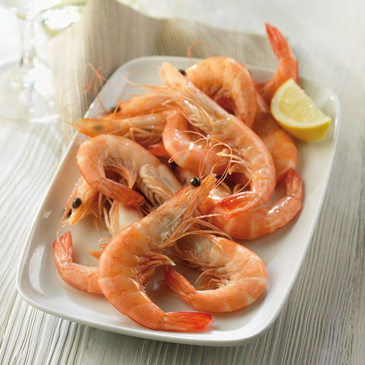

ANURA
Poco más de 6600 especies se congregan en el género anura. Su nombre obedece a una característica distintiva de los ejemplares adultos, la falta de cola. A este grupo pertenecen los sapos y ranas, anfibios de complexión rolliza y compacta, dotados de unas curiosas patas traseras que les permiten dar saltos precisos y potentes.
Unas 54 familias reúnen los especímenes de este género. La mayoría vive en el agua o en sus alrededores. Sus proporciones oscilan entre los 8.5 mm y los 30 cm, pero se pueden hallar mucho más grandes. La anura de mayor tamaño es la rana goliat, que puede medir 80 cm con las patas estiradas y pesar tres kilogramos. Es capaz de saltar tres metros en un solo impulso. Lamentablemente está en peligro de extinción por la pérdida de su hábitat.
Diferencias entre sapos y ranas
Las ranas son más ligeras y delicadas. Son excelentes saltadores, tienen la habilidad de trepar y aman el agua. Tienen la piel lisa y humedecida, recubierta de moco. Por su parte, los sapos son una clase de anura con la epidermis arrugada y dura. Su complexión es rechoncha, sus movimientos son torpes y prefieren los charcos y el lodo.
Habitad del Anura
Las preferencias de hábitat cambian conforme a la edad del anura. Mientras renacuajo prefiere un ambiente acuático, el adulto opta por la tierra. Cuando están en esa etapa regresan al agua únicamente para el apareamiento.
Algunas especies son autóctonas de climas desérticos. Los climas tropicales se asocian a ejemplares más robustos, de tonos muy diversos. En las zonas donde el frío arrecia, el anuro hiberna refugiándose en la tierra o el lodo. Se hallan ejemplares en cualquiera de los continentes. Sin embargo, el área norteña de África o la península árabe carecen de estos animales, al igual que las zonas congeladas de Asia, Norteamérica y Groenlandia.
Características
- Los anuros se caracterizan por tener bocas espaciosas y piezas dentales compactas, aunque algunos carecen de ellas. Un rasgo que sí comparten, son sus lenguas protráctiles, que pueden estirarse mucho fuera de la boca. Cuentan con párpados, pero no con orejas.
- Las patas traseras están más desarrolladas y «albergan» cuatro dedos, mientras que las delanteras tienen cinco. Entre cada dedo se ve la conocida membrana interdigital, que los convierte en hábiles nadadores. Su columna vertebral compacta y sólida es denominada urostilo, sirve para facilitar los saltos.
- Los ojos de estos animales poseen una singular agudeza. Gracias a ellos detectan bichos voladores que atrapan y engullen con su lengua. Su carácter sigiloso les ayuda a pasar desapercibidos ante sus presas, que pierden la batalla contra la velocidad de su lengua. Allí quedan adheridas y listas para convertirse en su alimento.
- El adulto come sólo animales vivos que caza durante el ocaso. Entre ellos se encuentran arácnidos, gusanos y crustáceos. También pueden devorar lagartijas y roedores. Por su parte, el renacuajo se nutre de sobras de animales, plantas y plancton.
GARZA
Garza es el nombre coloquial que se le da a los individuos de la familia Ardeidae. Son aves que se destacan por su aspecto esbelto y elegante, por su paciencia e inteligencia. La mayoría de las especies pasan casi todo el tiempo en el agua, ya sea salada, dulce o salobre, aunque no nadan, ni suelen zambullirse. Se les llama también garcita, garcilla, garceta, hocós, mirasoles y chiflones.Taxonómicamente se clasifica dentro del filo Chordata, subfilo Vertebrata, clase Aves, orden Pelecaniformes (tiempo atrás se clasificaban dentro del orden Ciconiiformes) y pertenecen a la familia Ardeidae. A su vez, las Ardeidas se subdividen en cuatro subfamilias (Tigrisomatinae, Cochleariinae, Botaurinae y Ardeinae) y diecinueve géneros. Existen alrededor de 60 a 65 especies de garza.
Características
- Todas las especies de garza se caracterizan por tener un cuello largo, piernas delgadas y largas, picos fuertes, rectos y puntiagudos. Las vértebras del cuello de estas aves son muy flexibles. Se acomodan de tal modo, que el cuello toma forma de letra “S”.
- La mayoría tiene anchas y largas alas. Poseen en el dedo medio algo parecido a un peine que emplea para acicalar su plumaje. Generalmente no presenta dimorfismo sexual.
Naturaleza
Algunas especies son gregarias, como la garza blanca y la garcita bueyera. Otras solitarias como el mirasol grande y el hocó colorado. A otras se les ve en pequeños grupos y en ocasiones solitarias como la martinete común y la garza cucharera. Algunas andan solas o en pareja, como la garceta chiflón y la garza azul, aunque para nidificar se agrupan.
La mayoría de las especies son de hábitos diurnos. Durante el día la garza ocupa casi todo su tiempo en buscar comida. Luego, se dispone a descansar cuando el sol se oculta, en la copa de los árboles, lejos de posibles depredadores. Otras son nocturnas, con mayor actividad en horas del crepúsculo y de la noche.Gracias a sus largas patas, merodea por las aguas poco profundas, que normalmente no supera la altura del pecho, de donde obtiene la mayoría de sus alimentos. Es una excelente pescadora y cazadora. Posee una aguda visión y audición para percibir su entorno y capturar las presas con mucha precisión, paciencia y perseverancia.Para cazar mueve su cuello a gran velocidad que, combinado con su largo y punzante pico, se traduce en un ataque infalible. Cuando vuela retrae su largo cuello y deja sus largas patas hacia atrás.
El batido de sus alas es lento, sin embargo, esta ave es capaz de volar largas distancias. Se comunica con sus pares con llamadas y posturas corporales. Normalmente suele ser un ave silenciosa, pero emite graznidos ensordecedores cuando es molestada o se encuentra en sus colonias de cría. La garza es capaz de adaptarse a los cambios ambientales que le rodean. Un ejemplo de ello, es la garza ganadera, que se ha adaptado a vivir en la tierra en una relación simbiótica con los mamíferos que pastan. Se alimenta de los animalitos que el ganado asusta cuando pasta y de los parásitos de la piel del ganado.
Alimentación
La garza se adapta a su hábitat al momento de alimentarse. La mayoría son carnívoras y otras son insectívoras. Se alimenta principalmente de peces, renacuajos, ranas, insectos acuáticos y pequeños reptiles. En oportunidades la garza se dirige a tierra firme para alimentarse de cangrejos, caracoles, pichones de otras aves, lombrices, insectos y gusanos. Colabora en el control de especies invasoras como la trucha arcoíris.
LIRÓN
El Eliomys quercinus, comúnmente conocido como lirón, es un roedor que destaca por tener un largo periodo de hibernación (siete meses), desde mediados de otoño hasta casi finalizada la primavera. Es un cariñoso animal perteneciente a la familia de los gliridae. Tiene un gran parecido con los ratones, pero se diferencia de estos porque vive en los árboles. Está emparentado con otros conocidos roedores como las marmotas y las ardillas.
Habitad y Distribución
El lirón se encuentra en casi todo el continente europeo, principalmente el avellano. Habita en regiones boscosas donde se divierte subiendo por los árboles. Encima de estos suele vivir y alimentarse.Hay distintas razas esparcidas por Eurasia, en países de Oriente Medio y en África. Se observa en matorrales junto a los ríos, en huertos, construcciones y hasta en jardines. Igualmente, existen especies que se localizan en lugares muy altos.
Para hibernar acondiciona, en un hueco o en un lugar subterráneo, una especie de nido con pelaje y plumas donde pasará su largo periodo. Durante este tiempo pierde aproximadamente la mitad de su peso y puede debilitarse un poco.
Alimentación
Aunque el lirón gris es más herbívoro, en general es un animal omnívoro. Se nutre de vegetales y plantas como zanahoria, pepino, calabacín, berenjena, frutas como mora, frambuesa, fresa, uva y kiwi.
Además, el lirón come proteína animal extraída de grillos, saltamontes y hormigas que le son de gran agrado. A pesar de su tamaño, es capaz de cazar pequeños conejos y liebres. Antes de hibernar se concreta a alimentarse de frutos secos para obtener la grasa suficiente requerida durante el invierno.
Comportamiento
Al lirón le complace vivir en grupo. Es un ser nocturno, es decir, que es muy activo durante la noche. Es muy buen trepador y puede saltar de una rama a otra e incluso a otros árboles. Es muy simpático y juguetón, por lo que constituye una buena alternativa para ser elegido como una original mascota. En los hogares alegran la vida de todos sus integrantes. Se recomienda adoptarlo en parejas para una mejor adaptación a su nuevo contexto.
DRAGÓN BARBUDO
El Pogona vitticeps, conocido popularmente cono dragón barbudo, habita normalmente en las zonas semidesérticas y desérticas de Australia. Se moviliza tranquilamente por tierra o áreas boscosas. Es de hábitos diurnos. Por las noches descansa, como lo suelen hacer la mayoría de los lagartos.La cabeza del dragón barbudo es triangular y está provista de muchas espinas escamosas. Cuando se siente bajo amenaza, las escamas ubicadas debajo de su boca se hinchan y se tornan de color negro. De allí proviene su nombre.
Características
- Este animal, pariente de la iguana, tiene el cuerpo lleno de escamas afiladas. Los machos miden hasta 60 centímetros de largo, mientras que las hembras son un poco más pequeñas. Su peso aproximado es de 450 gramos.
- El dragón barbudo puede ser anaranjado, rojo, castaño, gris o verde. Su tonalidad varía dependiendo del calor corporal o de su estado de ánimo.
- Su dieta es variada. De hecho se le considera omnívoro, porque se nutre tanto de animales como de plantas. A la hora de comer elige grillos, gusanos, langostas, lombrices, moscas y caracoles, entre otros especímenes similares. También siente predilección por frutas como la manzana, la sandía, la banana y la pera. Sin contar hortalizas como la lechuga y la zanahoria, que son verdaderamente de su agrado.
- Cuidar de este animal es muy fácil, por lo que hay quienes deciden tenerlo como mascota. La principal recomendación en esos casos es proveerle de suficiente agua, esencial para la muda de su piel.
Comportamiento
Cuando anda libre por su hábitat, el dragón barbudo se desplaza en grupos. Eso sí, siempre habrá uno que se comporte como el líder de la «manada». Algunos machos tienen que pelearse para lograr el título que los demás deben respetar. Cuando no se enfrentan en batalla, los dragones barbudos realizan movimientos corporales con los que logran comunicarse y destacar. En cautiverio no se recomienda tener a varios machos con una hembra. Podrían matarse entre ellos en luchas sangrientas.
Datos importantes
Al dragón barbudo le agrada mucho tomar el sol directamente. Así que si tienes alguno en casa, trata de sacarlo para que sienta los rayos solares. Son beneficiosos para él. Un estudio realizado por la revista Royal Society Open Science, concluyó que el cambio climático podría estar afectando las capacidades cognitivas de este lagarto. Es decir, su comportamiento presentaría complicaciones que reducirían su promedio de vida.
Por otro lado, se ha dicho que las altas temperaturas actuales impactan negativamente el desarrollo de los huevos de los dragones barbudos. Esto se determinó al comparar las crías de los animales que fueron desarrollados en temperaturas más bajas. La investigación arrojó más datos interesantes, como que los huevos incubados en ambientes fríos, tuvieran más posibilidades de adaptarse al ambiente y sobrevivir. El temor de los expertos, es que de continuar el calentamiento global, el futuro del dragón barbudo se verá comprometido.
TIBURÓN NODRIZA
El tiburón nodriza es uno de los animales más hermosos e intimidantes que existen. Su nombre científico es Ginglymostoma cirratum y se le conoce también como tiburón gato. Puede medir cuatro metros de largo y pesar 110 kilos. Su hábitat más común son los mares de América Central, aunque se han registrado avistamientos en Nueva York (Estados Unidos).
Características
- El tiburón nodriza lleva también el nombre de tiburón “gato”, porque posee unas raras protuberancias que se asemejan a los bigotes de los felinos. Se le reconoce por su particular tono marrón, que alcanza en la adultez, pues nace de color azulado.
- Los individuos de esta especie pueden llegar a comerse unos a otros. Al nacer, las crías deben huir lo más pronto posible para evitar ser “devorados” por su propia madre. Se ven obligadas a independizarse para poder sobrevivir. Su necesidad natural de supervivencia lo convierte en un animal caníbal.
Reproducción
El tiburón nodriza cumple con el ciclo de fecundación interna (cuando el espermatozoide fecunda al óvulo dentro de la hembra). El macho muerde una de las aletas de su pareja para poder introducirle sus órganos copuladores. La hembra a su vez mantiene a salvo a los huevos, los cuales se nutren de ella para desarrollarse. Sin embargo, hay otros tipos de embarazos: cuando ponen huevos fuera o cuando los embriones comen de las secreciones del útero. Se ha determinado que alcanzan la madurez sexual entre los 15 y 20 años y que pueden tener unas 20 crías por vez.
Tranquilidad en la profundidad
El tiburón nodriza no suele ir a la superficie marina. Prefiere estar al fondo, donde todo es más tranquilo y logra sentirse resguardado. Los espacios donde predominan el fango, el lodo o la arena son sus predilectos. Se arrastra con la ayuda de sus aletas, lo que le da un aspecto bastante tranquilo y parsimonioso. Esa pasividad permite que sea capturado, con el fin de introducirlo en grandes acuarios o parques recreacionales.
Es capaz de soportar los cambios ambientales sin ningún problema. De hecho, sobrevive muy bien a la cautividad y llega a mantenerse activo en estanques hasta por más de 20 años.
LANGOSTINO
El langostino es un crustáceo decápodo pariente del camarón y las gambas. De hecho, en ciertas regiones como México lo llaman camarón. En el mundo existen varias especies, siendo todas muy similares. Suelen concentrarse en dos grandes grupos: el que tiene bandas transversales en el cuerpo y el que no las tiene.
Características
- Todo el cuerpo del langostino es aplanado. Al cefalotórax lo cubre un caparazón duro que ostenta en la parte anterior una espina, llamada rostro. Este posee 12 dientes más uno inferior ubicado en la cara ventral. La región dorsal presenta tres surcos longitudinales, y la cola es alargada
- Los tres primeros pares de patas finalizan en pinzas, los restantes en una uña. Su peso oscila entre 10 y 200 gr y mide de 12 a 15 cm. Es de color rosado a marrón claro, distinguiéndose unos anillos transversales de color pardo en los segmentos del abdomen.
Hábitat y Alimentación
Vive en aguas dulces en las desembocaduras de los ríos, aunque también puede encontrarse en aguas poco profundas (desde los dos metros hasta los 100 metros). También se ubica en playas arenosas, habitualmente por las costas atlánticas europeas y mediterráneas.Este animal es muy pasivo. Durante el día se entierra en la arena, donde pasa gran parte del tiempo, mientras que en la noche sale de esa inactividad para buscar alimentos. Se nutre de moluscos, gusanos, crustáceos de fondo y algas.
Beneficios de consumo
Los langostinos son muy cotizados por diversas razones, principalmente por su exquisito sabor. Además poseen un alto valor nutricional, por su gran contenido de proteínas bajas en grasas. Aportan vitaminas como la D, B3, B9, B12 y E y minerales como calcio, potasio, magnesio, selenio, sodio, hierro, zinc y yodo. Proporcionan ácidos grasos omega 3, reconocidos por sus bondades en la prevención de enfermedades cardiovasculares porque reducen los índices del llamado colesterol malo y aumentan el bueno.
También son beneficiosos para mejorar la fertilidad. Constituyen un sano y sabroso alimento que puede ser preparado de múltiples maneras: en arroces, pastas, rebozados, al ajillo, a la plancha, con pimienta, con cremas blancas y de otras exquisitas formas que deleitan el paladar.Su alto consumo obedece también al aumento de la cría en espacios costeros, y a la posibilidad de adquirirlos congelados en los supermercados y otros establecimientos.
COLEÓPTERA
El orden coleóptera es el conjunto más numeroso de la clase insecta. Hay identificadas y caracterizadas unas 360 mil especies, la cual representa el 40% de todos los documentados y el 25% de todos los pertenecientes al reino animal hasta ahora conocidos. Muchos géneros nuevos son caracterizados anualmente.Este orden es conocido también como escarabajos, aunque este nombre puede variar de acuerdo al país donde se encuentren. Por ejemplo, en Venezuela se le conoce como congorochos, en Colombia como cucarrones. Algunas especies también son identificadas como gorgojos, otras luciérnagas y mariquitas.
De acuerdo al Diccionario de la Real Academia Española (DRAE), la palabra coleóptera o coleóptero, proviene del griego κολεόπτερος, compuesta por dos voces κολεό: “koleos” (funda), y de πτερόν: “pteron” (ala). Entonces coleóptera se refiere a “los insectos que tienen una funda preservadora sobre sus alas”.

Características
- El grupo de coleóptera está caracterizado por tener el caparazón más resistente, además tienen las alas menores protegidas por unas alas duras llamadas élitros. El armazón exterior está compuesto por una gran cantidad de láminas (escleritos) que se separan por unas membranas delgadas. Esta estructura le proporciona flexibilidad, además de protección.
- La morfología de estos animales resulta ser bastante semejante en la mayoría de las especies. Sin embargo, hay órganos y miembros que cambiarán en función y apariencia, de acuerdo a las familias. El cuerpo de los coleópteros se compone de 3 estructuras básicas: la cabeza, el torso y el abdomen.
Hábitat y Distribución
el orden coleóptera es el más diverso de todo el plano terrestre. Evaluaciones realizadas en el año 2015 sobre el número total arrojaron un aproximado de 1,5 millones de especies. Estos insectos están esparcidos en gran parte de la superficie de la Tierra. En cada hábitat donde se encuentre un poco de follaje allí estarán. En la corteza de los árboles, en las flores, hojas y raíces subterráneas, incluso en tejido vegetal muerto y en descomposición.
Reproducción
La reproducción de los coleópteros es generalmente sexual, sin embargo, hay muchas especies que se multiplican a través de la partenogénesis (sin fecundación), y sus poblaciones son en su gran mayoría hembras.
Casi todas las especies ponen huevos. Luego de que el huevo ha eclosionado la larva empieza a alimentarse de su piel hasta que se parte y esta sale de la piel vieja. Nuevamente se endurece y se repite el proceso, cosa que vuelve a ocurrir de tres a cinco veces hasta que la larva está madura.
AKITA
Una historia que involucra la caza de osos, ataques, defensas y caza mayor «envuelve» a los perros Akita, una raza también conocida como Akita Inu por la prefectura asiática homónima. Estos canes son originarios del país nipón, aunque hay otra variante que son los akitas americanos. Su esperanza de vida se sitúa entre 10 a 11 años.
Su historia
Existen pruebas de que la raza tiene una antigüedad de tres mil años. Su nombre variaba conforme al rol que ejercía. Si era perro de caza era Matagi-inu, si era de guerra le llamaban Karae-inu, y si era “de providencia” se le denominaba Odate-inu. Por su tamaño intermedio, se le empleo para cazar osos. Desde 1603 probaron las aptitudes del akita como can de pelea, pero en 1908 se prohibieron estos actos. En 1927 se fundó la “Sociedad de Preservación del Akita inu”. Actualmente, es el can nacional del país nipón. Se le nombró como Monumento Nacional en 1931.
Comportamiento
Será equilibrado de adulto si recibe una correcta socialización de pequeño. Se muestra silente y discreto, ignora el grueso de circunstancias irritantes. Podrá mostrarse dominante con otros canes, pero sin iniciar conflictos. En cambio, con su familia destacará por su lealtad, protección y afectividad. Se muestra amable con todas las personas, excepto con los malintencionados. Raramente ladra, cuando lo haga lo mejor será averiguar el motivo.Se adaptan a la vida en pisos cuando tienen la cantidad necesaria de ejercicio cotidiano. Al akita se le considera la raza #54 en inteligencia canina.
¿Cómo cuidarlo?
Vale recordar que por su tamaño, su alimentación representará un coste significativo. Se recomiendan las comidas de alta gama. De cachorros necesitan consumir escasas calorías, sino su crecimiento será acelerado. Se aconseja un cepillado diario, prestando atención especial a los periodos de muda. Una correcta alimentación ayudará a que su pelaje esté en perfecto estado. Necesitará de dos paseos diarios, procurando que corra a sus anchas. Habrá que cepillar sus dientes con frecuencia desde pequeño. Los premios anti-sarros serán muy útiles. Prefiere el agua templada para su baño mensual, con ayuda del cepillo el champú penetrará correctamente.
ABISINIO
El gato de la raza abisinio se destaca por su apariencia física similar a la de un puma en miniatura. Este singular felino tiene una bella figura armoniosa, esbelta y musculosa. La raza se caracteriza por mantener una conducta juguetona durante toda su vida. Además, es ágil, curioso, cariñoso y muy activo.
Es un mamífero doméstico carnívoro de la familia Felidae, subfamilia Felinae, género Felis, especie Felis silvestris y subespecie Felis silvestris catus o gato doméstico. Esta subespecie a su vez está conformada por muchas razas, entre ellas el Abisinio.
La Abisinio es una raza muy antigua y su origen no está claramente establecido. Los primeros Abisinios llegaron a Gran Bretaña en la década de 1860, traídos por los soldados que regresaban de la guerra con Abisinia, lo que hoy en día es Etiopia. De allí que el nombre la raza se tomara por la nación de donde venían. Se creía que eran originarios de Etiopía, pero esta teoría ha sido descartada por no encontrar rastros de gatos con el pelaje típico del Abisinio en ese país.
Otra teoría ubica su origen en el antiguo Egipto, por su gran parecido al gato sagrado de los faraones, pero no hay evidencia científica que lo avale. Existe evidencia genética que ubica su origen en las regiones costeras del índico y el sudeste asiático, donde el comercio de la época incluía rutas comerciales con la India. Esta situación hace que sea muy probable que así los hayan introducido a Europa.